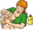

Aplique la loción con el cabello seco en cantidad suficiente para mojar completamente el cabello y el cuero cabelludo. Preste atención especial a la parte posterior de la cabeza y el cuero cabelludo. Lávese las manos después de la aplicación. Deje que el cabello se seque naturalmente
Lave el cabello con un champú con suavizante después de 8 a 12 horas de haber aplicado la loción.